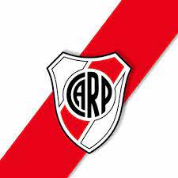

Curriculum Vitea |
Datos Personales |
|---|
|
Nombre: Luis Ariel Dick Edad: 30 DNI: 35402238 Nacionalidad:Argentino Tel: 1569430476 |
Aparte de programar |
|---|
|
Mi otra Gran Pacion |

|
River plate |
|---|
Soy Muy fanatico Del Millonario lo sigo a todas partes y en todas las disiplinas que realizan, las mas resientes que incorporaron es un team del LOL y un de CS:Global offensive.

Paguina de twitter de River Plate Gaming